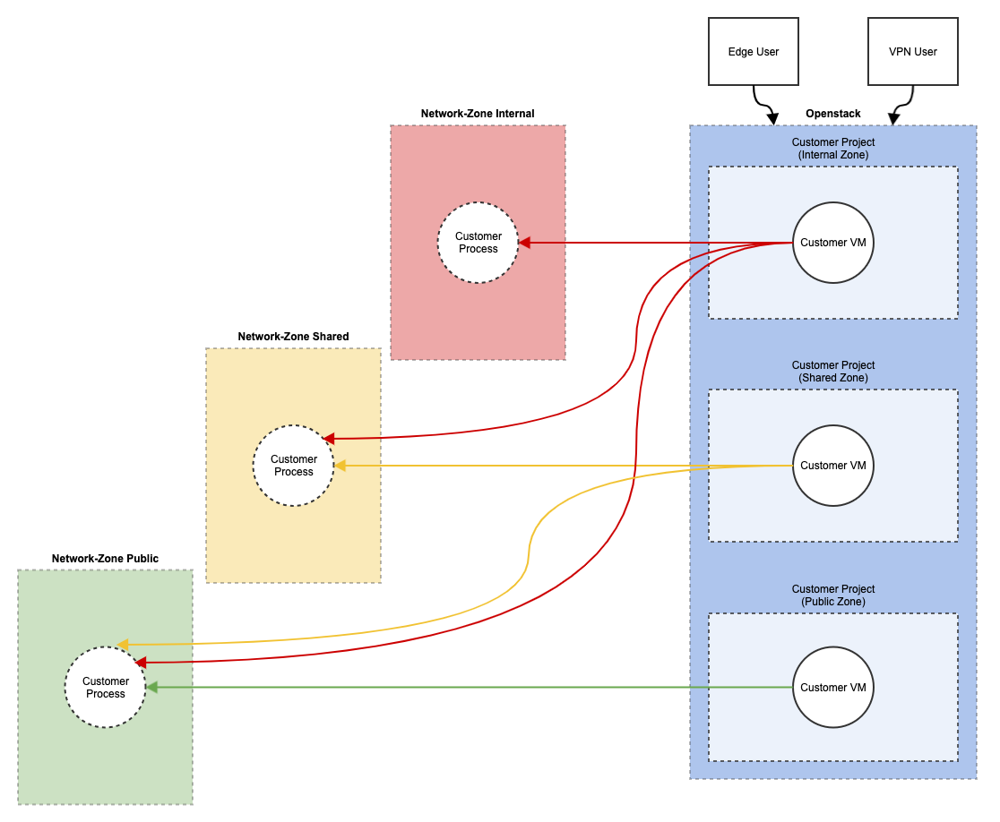

FAQ
Openstack
How are users added in Openstack?
Currently, users are added only upon request via Jira Helpdesk Ticket since every OpenStack user is also an admin.
How can VMs from other users/projects be deleted?
In the Horizon dashboard, you can access all VMs via the admin section and delete them.
How can the disk size of an existing VM be increased?
This is not possible in the current version of OpenStack.
What subnets are available?
There are always the following subnets:
- public
- shared
- private/internal
Upon request, a fourth network can be created: Lab. This is intended for direct connection without the Barracuda Firewall.
How are subnet separations managed?
The networks are purely virtualized via OpenVSwitch. Compliance with zones is managed in the OperationsCenter via Security Rules and Security Groups, which are IPFilter rules in OpenStack Neutron.
Operations Center
How are users added in the OperationsCenter?
Access to the Operations Center is realized via SSO. After users have logged in, they can be added to a project by project owners.
Groups vs Roles: Difference between Roles and Groups
The Operations Center currently has 4 user groups:
- External Users
- Users (SSO)
- Admins (SSO)
- Global Admins (SSO)
Can admin rights be restricted to one project only? How?
Users automatically have full access to projects they create. Other project owners can pass on the right.
How can I change the owner of a project?
Any project owner and admin with access to the project can change the permissions.
What happens when a user leaves the company?
Through SSO integration, the user automatically loses access. It may be necessary to reassign their projects. See the previous point. VPN accesses must be deleted manually.
Can specifications be made on how a project should be named?
During creation. There is no provision for changes.
How is a VPN created?
Global administrators can activate the function for individual projects. Project owners can further enable users added to the project.
How are project shares created?
On the home page of each project via the member list.
How are flavors managed?
Flavors are managed in OpenStack. Each “public” flavor is available for configuration in Operations Center.
If a “public” flavor should no longer be selectable in Operations Center when creating a VM, the metadata of the flavor can be changed accordingly. To do this, select the flavor in Horizon, click on “Update Metadata”, enter visibility in the “Custom” field and add it with “+”. The field now appears under “Existing Metadata”. Enter the value “false” here and save the change. The flavor can now no longer be selected when creating a new VM. Existing VMs that use this flavor are not affected and can still be managed in Operations Center.
Flavors cannot be restricted to individual users.
Are flavors allowed to be deleted?
Yes, but only if it’s ensured that no VM is using the flavor. Deletion is done via Horizon.
If a flavor is deleted that is still in use, each project that has a VM using that flavor cannot be managed in Operations Center any more.
Where can logs be viewed if a VM has been created but doesn’t appear?
It’s possible to observe and repeat the VM startup process via Horizon.
How can VMs be deleted from other users/projects?
Only users and global administrators with project access can delete VMs.
Project list in Operations Center vs Horizon
Projects from the Operations Center are also visible in Horizon. Projects created in Horizon are not visible in the Operations Center.
How can VMs be started?
VMs can be started via the “Start” button in the Operations Center.
How can the disk size of an existing VM be increased in Operations Center?
It’s not possible.
How can external/internal users be deleted?
Internal users are authenticated via SSO. If they are disabled there, they are automatically blocked. External users can be deleted by administrators in the overview of external users in the Operations Center.
How can the router be edited and configured?
The Operations Center automatically configures routers according to project specifications.
How can routes be edited in the Operations Center?
Additional routes cannot be set up in the Operations Center.
How can an SSH key be added to an existing VM?
It’s not possible to add SSH keys via the Operations Center after VM creation. They must be added directly to the VM.
Volume Sizes
The Operations Center allows the creation of volumes in different sizes. The list can be expanded upon request.
Can the Operations Center be configured via API?
No, that is not intended.
How can I log in to a Windows VM? The user ‘operation’ does not work with the entered password.
Instead of the ‘operation’ user, for Windows VMs, the user of the selected image must be used. Often Administrator.
General
Zones

Security zones are structured in hierarchically descending order, starting with the Private/Internal Zone, followed by the Shared Zone and Public Zone. Based on this, virtual machines (VMs) can communicate hierarchically descending by assigning floating IPs. If VMs are located in the Private/Internal Zones, communication with floating IPs in the Shared and Public Zones is possible. However, the reverse, from the Shared Zone to the Private/Internal Zones, is not allowed. Similarly, communication from the Public Zone to the Shared Zone to the Private/Internal Zones is not allowed.
Communication always follows the principle from secure to insecure. This hierarchical structure allows orderly and security-conscious communication between the different zones. Furthermore, floating IPs from the Private/Internal Zones are only reachable from the institute network, services with a floating IP from the Public IP can be provided to the internet through the institute IT.
On request, a Lab Zone can be set up as a special zone with a direct connection to the switches.
The zones are managed by the Operations Center. For projects created in OpenStack, the user is responsible.
How can the hardware servers be shut down/restarted? For example, during a temporary power outage.
Currently only through a request in the Jira Helpdesk.
Do servers start automatically after a power outage?
The servers start automatically, but the edge is not automatically usable, as CEPH replication is disabled during a controlled shutdown. This must be re-enabled upon restart.
If the attached Windows image is selected, does it already include a license? What kind of license is it?
It’s a trial license from Microsoft. For Windows VMs, the customer is responsible for acquiring and adding a license.
NVLink and NVSwitches
NVLink and NVSwitches connect NVidia graphics cards for direct data exchange between the graphics cards.
Currently, we use Supermicro GPU servers, which do not have NVLink or NVSwitches between the individual GPUs.
At present, NVLink and NVSwitches are only installed in NVidia’s own servers of the DGX or HGX brand.